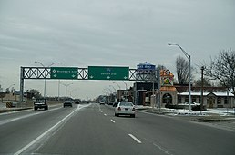
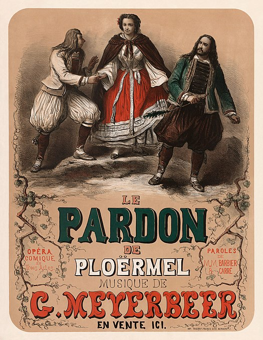

2021 edition of Wiki Loves Monuments photography competition is now open!
Help improve the coverage on Indian cultural heritage in Wikipedia!
2021 edition of Wiki Loves Monuments photography competition is now open!
Help improve the coverage on Indian cultural heritage in Wikipedia!
Create account Login
2021 edition of Wiki Loves Monuments photography competition is now open!
Help improve the coverage on Indian cultural heritage in Wikipedia!
Welcome to Wikipedia
The free encyclopedia that anyone can edit.
6,378,943 articles in English
Languages
From today's featured article:
M-1 is a north–south state trunkline highway in the Metro Detroit area of the US state of Michigan. The highway runs from Detroit north-northwesterly to Pontiac. The Federal Highway Administration has listed it as the Automotive Heritage Trail, an All-American Road in the National Scenic Byways Program. Created after Detroit's Great Fire of 1805, the road follows the route of the Saginaw Trail, a Native American trail that linked Detroit with Pontiac, Flint, and Saginaw. M-1 passes through several historic districts in Detroit, and runs next to the Highland Park Ford Plant, home of the original moving assembly line used to produce Model Ts. Commonly known as Woodward Avenue, the street has become synonymous with Detroit's cruising culture and automotive industry. Downtown entertainment venues along Woodward include the Fox Theatre and the Majestic Theatre. M-1 exits Detroit at 8 Mile Road and runs through the city's northern suburbs in Oakland County.
In the news:
- Former President of Algeria Abdelaziz Bouteflika (pictured) dies at the age of 84.
- SpaceX launches Inspiration4, the first all-civilian orbital spaceflight.
- The United States, United Kingdom and Australia sign a security pact that will provide Australia with nuclear submarines.
- British tennis player Emma Raducanu wins the US Open, becoming the first qualifier to win a Grand Slam title.
- In Gaelic Football, Tyrone win the All-Ireland Senior Football Championship, defeating Mayo in the final.
Today's featured picture:
Giacomo Meyerbeer (1791–1864) was a German opera composer. Born to a wealthy Berlin family, he began his musical career as a pianist but soon decided to devote himself to opera. Meyerbeer spent several years in Italy studying and composing, before moving to Paris, where he became a dominant figure in the world of opera. This poster advertised the premiere of Meyerbeer's opera Le pardon de Ploërmel, which opened at the Opéra-Comique in Paris on 4 April 1859